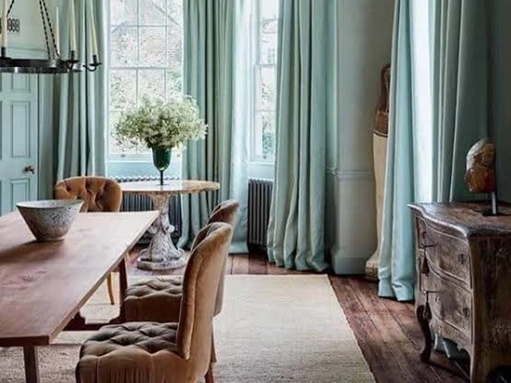

Winter curtain guide · Curtain Canvas blog
Winter curtains: Comfort, privacy, and fabric selection
When the cool, dry season arrives in Bangladesh, most of us pull out a blanket and make a cup of tea. Far fewer people think about the biggest surface in the room that is still dressed for summer: the window. Well-chosen winter curtains soften chilly drafts, give you privacy once the lights come on early in the evening, and make a room feel warm and settled rather than bare and echoing.
This guide walks you through how winter curtains work, how to protect your privacy without sacrificing daylight, and how to choose the right fabric, lining, and color for each room.
Why winter curtains matter in Bangladesh
Winter in Bangladesh is short but noticeable, with chilly nights, foggy mornings, and early sunsets. Most homes have no central heating, so your curtains do a lot of the work of keeping a room comfortable.
- Block cold drafts: Cool air slips in through window gaps, and thick curtains slow it down.
- Keep rooms cozy: Lined curtains hold in warmth, so the area near the window feels less cold.
- Protect your privacy: Lights come on early in winter, and curtains stop people from seeing in after dark.
- Cut down dust and glare: Dry-season dust and low winter sun are both softened by the right fabric.
- Make the room feel warm: Rich fabrics and deeper colors add texture and a snug look to the space.
Comfort: how curtains make a winter room feel warmer
Curtains will not replace a heater, and it is worth being honest about that. What they do is reduce how quickly a room loses its comfort. A thick, tightly hung curtain traps a layer of still air between the fabric and the glass, and that layer slows the movement of cold air into the room. The result is a more even temperature and fewer chilly spots near the window.
To get the most comfort from your winter curtains:
- Choose weight and density. Closely woven, heavier fabrics block more air movement than thin, open weaves.
- Add a lining. A lined curtain hangs better, feels more substantial, and adds another barrier. A thermal or blackout lining gives extra insulation.
- Go floor-length. A curtain that stops well above the floor lets cold air flow underneath. Hanging it just clear of the floor, or with a slight break, closes that gap.
- Extend beyond the window. Let the curtain overlap the frame by several centimeters on each side and sit high above the window so air cannot slip around the edges.
- Use the sun. Open your curtains fully on sunny winter days to let natural warmth in, then close them at dusk to hold it.
Privacy: keeping your home comfortable and private after dark
In winter, windows stay closed and lamps go on earlier. Once it is dark outside and bright inside, glass stops being a window and becomes a display case. This is especially noticeable in apartment buildings where neighboring flats sit close by and in ground-floor or street-facing rooms.
There are a few reliable ways to handle it:
- Layer sheers and drapes. A fine sheer on the inner track softens daylight and blocks casual views during the day, while a heavier drape on the outer track closes fully at night. This pairing is the most flexible privacy solution for living rooms.
- Choose opacity for bedrooms. Lined or blackout curtains give complete visual privacy and also help with sleep, since early winter sunrises and street lighting can both disturb rest.
- Think about the rooms you actually use at night. Living rooms, dining rooms and bedrooms usually need the most coverage. A home office may be fine with a light-filtering fabric.
- Mind the edges. Gaps at the sides and the top of the curtain are where privacy and warmth both leak. Proper fullness and good hardware solve both problems together.
- If your room needs privacy without giving up light, our curtain consultancy service can help you plan the right combination of layers for each window.
Fabric selection: choosing the right material for winter
Fabric is where most of the winter decision lives. Here is how the common choices compare.
| Fabric | Warmth feels | Privacy | Look and feel | Best for |
|---|---|---|---|---|
| Velvet | High | High, especially when lined | Rich, soft, luxurious with a gentle sheen | Bedrooms, formal living rooms |
| Chenille | High | Medium to high | Plush, textured, cosy | Living rooms, family spaces |
| Jacquard | Medium to high | Medium to high | Woven pattern, classic and elegant | Living and dining rooms |
| Lined cotton or linen blends | Medium | Medium to high with lining | Natural, relaxed, breathable | Everyday rooms, home offices |
| Faux suede | Medium to high | High | Smooth, modern, soft to touch | Contemporary interiors |
| Blackout-lined drapes | High | Very high | Depends on the face fabric | Bedrooms, media rooms |
Lining and interlining: the quiet upgrade
Two curtains made from the same fabric can behave very differently depending on what is behind them. A standard lining improves the fall and protects the face fabric from sunlight. A thermal or blackout lining adds a denser barrier that helps with warmth and with light and privacy at night. Interlining, a soft layer sandwiched between the face fabric and the lining, gives the curtain extra body and a more luxurious hang, though it also makes the curtain heavier.
If you are choosing where to spend a little more, upgrading the lining is often a better investment than upgrading the face fabric.
Colour and texture for winter
Color changes how warm a room feels. In colder months, many people lean toward deeper, earthier tones such as cocoa, olive, rust, burgundy, charcoal, and warm taupe. These shades add depth and feel naturally cozy against winter light. Soft neutrals like ivory, sand, and stone also work well if you want a calm, airy feel, particularly when paired with a textured fabric.
Texture matters as much as color. A plush velvet or a woven jacquard gives a neutral shade far more richness than a flat weave would. When in doubt, choose a color that works with your sofa, flooring, and wall paint rather than one that competes with them, and look at fabric samples in your own room's light before deciding.
Choosing winter curtains room by room
Every room has its own needs, from the full privacy of a bedroom to the daylight a home office wants. Matching the fabric and layers to how you use each space gives you the right balance of warmth, light and style.
- Bedroom: Prioritise full privacy and warmth. Lined or blackout velvet, chenille, or faux suede works well, ideally layered with a sheer for daytime softness.
- Living room: Aim for a balance of warmth, light, and style. Layered sheers with a heavier drape give you flexibility for guests, daylight, and evenings.
- Dining room: Choose fabrics that look refined but are easy to maintain, such as jacquard or a lined blend.
- Home office: A light-filtering layer manages glare and privacy while still letting daylight in for work.
- Children's room: Pick soft, durable fabrics and secure, safe hardware, and avoid long loose cords.
- For more ideas by space, see our residential curtains page.
Length, fullness, and hardware
The right fabric can still disappoint if the proportions are off. Three details make the biggest difference:
- Fullness: Curtains look and perform best when they are generously gathered rather than stretched flat. Fuller curtains trap more air and drape more beautifully.
- Length: Floor-length or just-clearing-the-floor curtains look more polished and block more draught than short ones.
- Hardware: Heavy winter fabrics need a rod or track that can carry the weight without sagging. Matching the hardware to the fabric is part of getting the result right.
Caring for winter curtains
Heavy fabrics collect dust, and the dry season is dusty. A few simple habits keep them looking good:
- Vacuum gently along the folds with a soft brush attachment every few weeks.
- Air the curtains on dry, sunny days when possible.
- Follow the care label. Many lined and velvet curtains are best professionally cleaned rather than machine washed.
- Keep them away from heaters and open flames, and avoid pushing furniture hard against them.
Common mistakes to avoid
A few small errors can stop even beautiful winter curtains from keeping you warm or private. Knowing what to watch for before you order saves you time, money, and a second round of changes.
- Choosing a fabric by looks alone and ignoring weight and lining.
- Ordering curtains that are too short or too narrow for the window.
- Using a flimsy rod for heavy fabric.
- Skipping a sheer layer and then feeling you have to choose between light and privacy.
- Leaving the decision until the coldest weeks, when there is no time to compare options properly.
How Curtain Canvas can help
Choosing winter curtains is easier when you can see the fabrics in your own space. Curtain Canvas supports you from the first idea to the final fitting, with a complete service for homes across Bangladesh.
- Expert consultancy: Our team helps you choose the right fabric, lining, color, and layers for each room through our curtain consultancy service .
- Onsite visit and trial hanging: We bring the catalogue and fabric samples to your home and hang them at your window, so you can judge the look before you decide. Learn more about our onsite visit and trial hanging .
- Precise measurement: Your windows are measured carefully so the length, width, and fullness suit them.
- Custom tailoring: Your curtains are stitched and finished to your approved design and measurements.
- Professional installation: Our team fits the rod or track and checks the fall, alignment, and movement beforehand.
Common questions
FAQs about winter curtains
They help, though they do not replace heating. Thick, lined curtains that hang close to the floor and overlap the window frame reduce cold air movement and make the area near the window feel more comfortable.
Velvet, chenille, jacquard and lined cotton or linen blends are all dependable. Velvet and chenille feel warmest, while jacquard and blends suit rooms where you want a lighter, more refined look. Lining improves any of them.
Yes. Sheers are useful for daytime light and privacy. In winter, pair them with a heavier curtain on a second track so you can close the drape at night for warmth and full privacy.
They are a good choice for bedrooms. The dense lining blocks light and adds a helpful barrier against cool air, and it keeps street lighting and early sunrises from disturbing sleep.
Ideally yes. Floor-length or just-clearing-the-floor curtains look more elegant and block more draught than short ones.
Start with how you use the room, how much privacy and light you need, and your existing colours and furniture. A consultant can then recommend fabrics, lining, length and hardware that suit your windows.